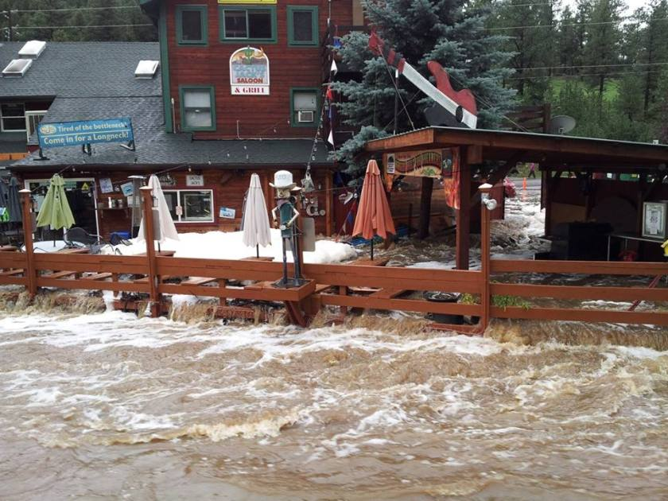
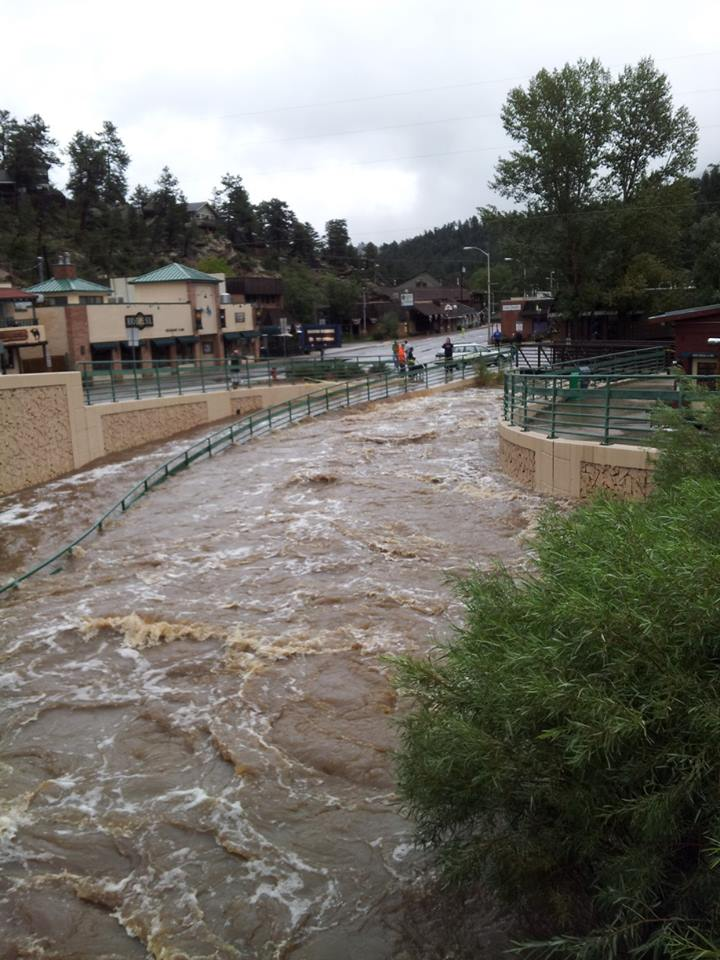

| Hazard Type | Likelihood of Occurrence | Spatial Extent | Potential Magnitude |
| Avalanche | Unlikely | Limited | Negligible |
| Dam Failure | Unlikely | Limited | Limited |
| Drought | Likely | Extensive | Negligible |
| Earthquake | Unlikely | Extensive | Negligible |
| Erosion and Deposition | Occasional | Limited | Negligible |
| Expansive Soils | Unknown | Limited | Negligible |
| Extreme Temperatures | Unlikely | Extensive | Negligible |
| Flood | Likely | Significant | Catastrophic |
| Hailstorm | Likely | Extensive | Negligible |
| Landslide,Debris Flow, Rockfall | Likely | Limited | Negligible |
| Lightning | Likely | Limited | Negligible |
| Severe Winter Storms | Likely | Extensive | Negligible |
| Subsidence | Unlikely | Limited | Negligible |
| Tornado | Occasional | Extensive | Limited |
| Wildfire | Likely | Significant | Negligible |
| Windstorm | Likely | Extensive | Limited |
Morrison faces many potential hazards. However, the chart above illustrates that flooding presents the biggest threat to Morrison. This is because Morrison was built adjacent to Bear Creek. With a potentially "catastrophic" magnitude, it is essential that the town take precautions to mitigate flood damage if, and when, Bear Creek floods in the future.
Evergreen, Colorado - September, 2013 Flooding
 
While Evergreen is farther upstream than Morrison, the main street of the town is also built along Bear Creek. In 2013, downtown Evergreen experienced extreme flooding, causing significant damage to local businesses and city infrastructure. If Morrison does not take proper planning and flood preparedness measures, the town could experience effects comparable to those felt by Evergreen in 2013.The Flood Hazard Map tab in this web page explores FEMA's 100-year floodplains and 500-year floodplains. Users can examine different land parcels within Morrison and assess flood risk based on proximity to floodplains. The goal of this map is to facilitate public education on local flood risks while encouraging flood mitigation efforts.
Morrison image:www.fhwa.dot.gov/byways/Uploads/asset_files/000/018/015/Overlooking_Morrison.JPG